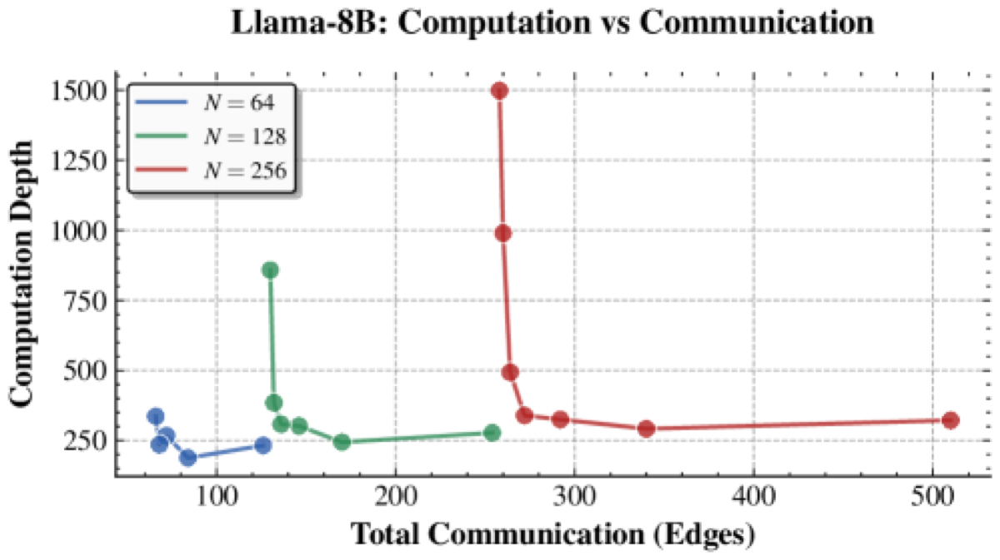

Why it matters왜 중요한가
Multi-agent collaboration is treated as a free lunch — but the theory says communication has a price, and it is the price of every speedup.
멀티에이전트 협업은 공짜 점심처럼 쓰이지만, 이론은 통신에 값이 있다고 말한다 — 그리고 그 값이 곧 모든 속도 향상의 대가다.
Single LLMs degrade as context and complexity grow, so practitioners split work across agents (Chain-of-Agents, LongAgent, XpandA). But this is all empirical heuristics; nobody has characterized when partitioning helps, how much inter-agent communication it costs, and whether it actually saves time. This paper imports the rigor of Transformer expressivity theory into the multi-agent setting and proves two conservation laws, then maps three canonical reasoning tasks onto three distinct cost regimes — turning "spin up more agents" from folklore into a design decision with provable bounds.
단일 LLM은 문맥과 복잡도가 커질수록 성능이 무너지므로, 실무자들은 작업을 여러 에이전트에 쪼갠다(Chain-of-Agents, LongAgent, XpandA). 그러나 이는 모두 경험적 휴리스틱일 뿐, 언제 분할이 도움이 되고, 에이전트 간 통신 비용이 얼마이며, 실제로 시간을 절약하는지를 규명한 사람은 없었다. 이 논문은 트랜스포머 표현력 이론의 엄밀함을 멀티에이전트로 끌어와 두 보존 법칙을 증명하고, 세 대표 추론 과제를 세 비용 영역에 매핑한다 — "에이전트를 더 띄워라"를 구전 지식에서 증명 가능한 한계를 가진 설계 결정으로 바꾼다.

By the numbers핵심 숫자
regimes identified규명한 깊이–통신
실현 영역 수
(recall · state · k-hop)분석한 알고리즘 과제군
(recall·state·k-hop)
associative recallassociative recall의
깊이·통신
with w agentsw 에이전트 state tracking
깊이
k-hop reasoningk-hop 추론의
깊이·통신
backbones tested검증에 사용한
Llama-3.x Instruct
Results — three tasks, three regimes결과 — 세 과제, 세 영역
| Task | Depth | Communication | Regime |
|---|---|---|---|
| Associative recall | O(1) | O(1) | 1 · free scale-out |
| State tracking (monoid) | O(log w + N/w) | O(w) | 2 · pay to speed up |
| k-hop reasoning | O(k) | O(k) | 3 · talk, no speedup |
| Any task (lower bound) | — | O(1) ⇒ single-agent O(1) depth | conservation laws |
In one diagram한 장의 그림
Idea: communication is a budget, not a freebie아이디어: 통신은 공짜가 아니라 '예산'이다
MAS as a DAG of agents
A multi-agent system is a directed acyclic graph: nodes are agent states over time, CoT edges are autoregressive thinking within one agent, and communication edges carry a symbol between agents. One node is the manager that emits the answer. Four metrics — depth (wall-clock), width (#agents), size (total work), communication budget (#sending nodes) — make tradeoffs precise.
멀티에이전트 시스템을 방향 비순환 그래프로 본다: 노드는 시간에 따른 에이전트 상태, CoT 엣지는 한 에이전트 내부의 자기회귀적 사고, 통신 엣지는 에이전트 간 심볼 전달. 한 노드는 답을 내는 매니저. 네 지표 — 깊이(벽시계), 폭(에이전트 수), size(총 연산), 통신 예산(송신 노드 수) — 로 트레이드오프를 정량화한다.
Two impossibility results
Conservation of size (Prop 4.1): any multi-agent protocol collapses to a single agent with the same total size — parallelism never reduces total work. Depth–comm tradeoff (Prop 4.2): if a system uses only O(1) communication, a single agent matches it in O(1) depth — so every real speedup requires growing communication. These two laws carve out exactly three feasible regimes (and one impossible one).
size 보존(Prop 4.1): 모든 멀티에이전트 프로토콜은 같은 총 size의 단일 에이전트로 환원된다 — 병렬화로 총 연산은 줄지 않는다. 깊이–통신 트레이드오프(Prop 4.2): 통신을 O(1)만 쓰면 단일 에이전트가 O(1) 깊이로 따라잡는다 — 즉 모든 실질적 속도 향상은 통신 증가를 요구한다. 이 두 법칙이 정확히 세 실현 영역(과 한 불가능 영역)을 깎아낸다.
How it works어떻게 작동하나
- Model each agent에이전트 모델링Treat every agent as a Unique Hard Attention Transformer (UHAT) — a plausible model for long-context reasoning that subsumes fixed-precision softmax Transformers.각 에이전트를 Unique Hard Attention Transformer(UHAT)로 본다 — 장문맥 추론에 타당한 모델이며 고정정밀 softmax 트랜스포머를 포섭한다.
- Derive the bounds한계 유도Prove the two conservation laws, then for recall / state tracking / k-hop derive matching upper and lower bounds on agents, communication, and depth.두 보존 법칙을 증명한 뒤, recall·state tracking·k-hop 각각에 대해 에이전트·통신·깊이의 상·하한을 맞물려 유도한다.
- Build optimal protocols최적 프로토콜 구성Instantiate them as real protocols: Chain-of-Agents for recall, Prefix-Sum for state tracking, Iterative-Query for k-hop — each hitting its theoretical regime.실제 프로토콜로 구현: recall엔 Chain-of-Agents, state tracking엔 Prefix-Sum, k-hop엔 Iterative-Query — 각자 자기 이론 영역에 도달.
- Validate on real LLMs실제 LLM 검증Run Llama-70B / 8B on controlled synthetic benchmarks vs. a majority-voting baseline, confirming the predicted depth–communication tradeoffs hold in practice.통제된 합성 벤치마크에서 Llama-70B/8B를 다수결 베이스라인과 비교 실행, 예측된 깊이–통신 트레이드오프가 실제로 성립함을 확인.
What to take away그래서, 가져갈 것
More agents ≠ less work. By conservation of size, parallelism only redistributes computation — it can cut wall-clock time but never the total bill. Budget accordingly.
에이전트가 많다고 일이 줄지 않는다. size 보존에 따라 병렬화는 연산을 재분배할 뿐 — 벽시계 시간은 줄여도 총량은 못 줄인다. 그에 맞게 예산을 짜라.
Speedup has a fixed price: communication. If a task doesn't tolerate growing inter-agent messages, no multi-agent setup will make it faster than a single model.
속도 향상의 가격은 통신으로 고정돼 있다. 과제가 에이전트 간 메시지 증가를 못 견디면, 어떤 멀티에이전트 구성도 단일 모델보다 빠르게 만들 수 없다.
Match protocol to regime. Recall → flat map-reduce; state tracking → hierarchical prefix-sum; k-hop → iterative query rounds. The task's regime dictates the right architecture.
프로토콜을 영역에 맞춰라. recall → 평평한 map-reduce, state tracking → 계층적 prefix-sum, k-hop → 반복 쿼리 라운드. 과제의 영역이 올바른 아키텍처를 결정한다.
Theory that predicts real LLMs. The depth–communication curve isn't just asymptotic — it shows up in Llama-8B parity runs, giving the bounds empirical teeth.
실제 LLM을 예측하는 이론. 깊이–통신 곡선은 점근적 결과에 그치지 않고 Llama-8B parity 실험에서 그대로 나타나, 이론적 한계에 경험적 무게를 더한다.